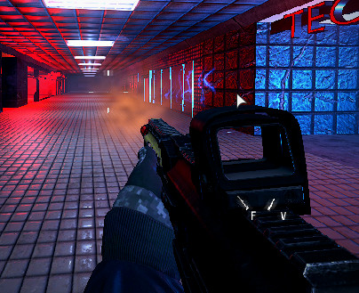

Module: bullet_system
Documentation last edited: October 22, 2025 at 8:00 UTC
Description

*Пример оружия игрока, но также используется для NPC, турелей и всего, что стреляет
Модуль системы пуль, содержащий базовый класс, класс данных пули, сцену следа пули и другое. Если ты хочешь создать новую "систему пуль", просто создай новый класс, расширяющий
BulletSystem
. Если ты хочешь использовать систему пуль - никогда не используй конкретные реализации напрямую, вроде
RaycastBulletSystem
. Эта система была создана для простой замены системы пуль в случаях, когда это может потребоваться. Ты просто используешь API
BulletSystem
, состоящее из двух простых методов:
update
и
shoot_bullet
. Если ты хочешь настроить воздействие/поведение своей пули, тебе также может понадобиться сделать это в ресурсе
BulletData
.
Пример использования
# Запуск этой логики в каком-нибудь Node
# Создание ресурса данных пули
var bullet_data: = BulletData.new()
bullet_data.min_damage = 10
bullet_data.max_damage = 100
bullet_data.min_armor_damage = 100
bullet_data.max_armor_damage = 200
bullet_data.bullet_force = 2.0
bullet_data.max_distance = 1000.0
bullet_data.spread = 0.1
# Его также можно просто загрузить, так как он может быть сохранён как файл ресурса
var different_bullet_data = load("res://path/to/bullet_data.res")
# Создание и выстрел
var bullet_system: BulletSystem
bullet_system = RaycastBulletSystem.new() # Используем рейкасты для этого примера
bullet_system.initialize(get_world().direct_space_state, self)
bullet_system.shoot_bullet(global_position, Vector3.FORWARD, bullet_data)
# Использование загруженных данных пули вместо созданных
bullet_system.shoot_bullet(global_position, Vector3.UP, different_bullet_data)
General Information
Root directories list
assets, docs, src
Nodes
Classes
RaycastBulletSystem
BulletSystem
Resources
Other Scripts
None